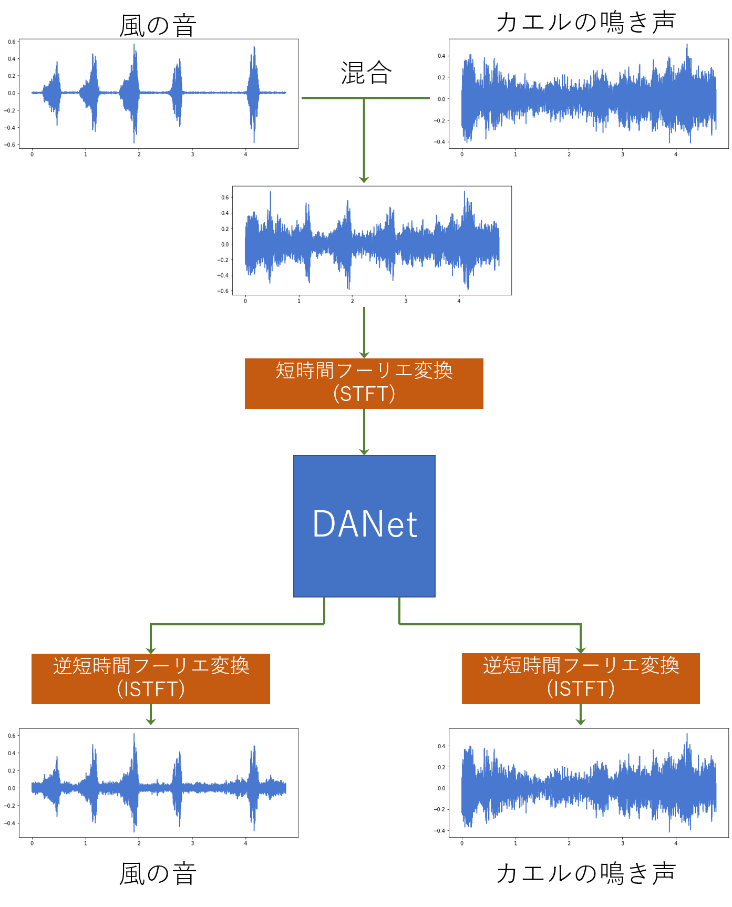

サークル活動
hogehogeDeep Learningについて
Deep Learningの基礎知識となる以下の事柄についてpdfにまとめました。簡単に説明しているのでぜひ気軽にご覧になってください!- 人工知能・機械学習・深層学習
- ニューラルネットワークと層構造
- 学習
- 損失関数
- 勾配法
- 誤差逆伝播法
実例
顔認識


あなたは誰に似ているのか!?
画像を機械に読み取らせ、機械が学習した10人のうち最も似ている順に
その名前を教えてくれます
デモ: Google Colab
解説: KYM384/FaceRecgnition_kaira
人流推定
音声分離
Deep Attractor Network
DEEP ATTRACTOR NETWORK FOR SINGLE-MICROPHONE SPEAKER SEPARATIONという論文で提案されている音声分離のモデルです。任意の種類の音声が混ざった入力音声を分離することができます。
KaiRAメンバーの一人がこのモデルの実装に取り組み、ESC-50という環境音データセットを用いて2種類の環境音を分離させるモデルの構築、学習を行いました。Google Colaboratory上で簡単に実行できます。また、実装したモデルについてまとめたQiita記事や実装コードを載せたGithubリポジトリもあります。
- 例として、風の音とカエルの鳴き声の分離について示します。 
テストデータでの推論結果(※音量が少し大きいので注意してください。)